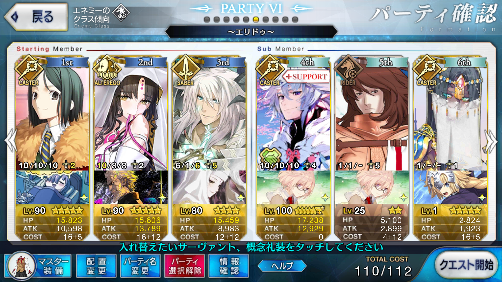

<!DOCTYPE HTML>
<html>
<head><meta name="generator" content="Hexo 3.9.0">
  <meta charset="utf-8">
  
  <title>【FGO】エリドゥ 竜の牙集め 周回 | ぷらずま式改</title>
  <meta name="author" content="NPlasma">

  
  <meta name="description" content="NPlasmaの個人メモ">
  

  

  <meta name="viewport" content="width=device-width, initial-scale=1, maximum-scale=1">

  <meta property="og:title" content="【FGO】エリドゥ 竜の牙集め 周回">
  <meta property="og:site_name" content="ぷらずま式改">

  
  

  
    <meta property="og:image" content="/img/ogp.png">
  

  <!-- ogp -->
  
    
      <meta name="description" content="この記事ではFGOフリークエストの周回を扱います。編成画像にて最終再臨絵のネタバレがあるのでご注意を">
<meta name="keywords" content="ゲーム,Fate,Fate&#x2F;GrandOrder,FGO,フリクエ周回">
<meta property="og:type" content="article">
<meta property="og:title" content="【FGO】エリドゥ 竜の牙集め 周回">
<meta property="og:url" content="http://elleonard.github.io/nplus_doc/2018/04/14/game/fate/fgo/freequest/eridu-tooth/index.html">
<meta property="og:site_name" content="ぷらずま式改">
<meta property="og:description" content="この記事ではFGOフリークエストの周回を扱います。編成画像にて最終再臨絵のネタバレがあるのでご注意を">
<meta property="og:locale" content="ja">
<meta property="og:image" content="http://elleonard.github.io/nplus_doc/2018/04/14/game/fate/fgo/freequest/eridu-tooth/eridu-tooth.png">
<meta property="og:updated_time" content="2019-09-13T04:56:39.305Z">
<meta name="twitter:card" content="summary">
<meta name="twitter:title" content="【FGO】エリドゥ 竜の牙集め 周回">
<meta name="twitter:description" content="この記事ではFGOフリークエストの周回を扱います。編成画像にて最終再臨絵のネタバレがあるのでご注意を">
<meta name="twitter:image" content="http://elleonard.github.io/nplus_doc/2018/04/14/game/fate/fgo/freequest/eridu-tooth/eridu-tooth.png">
<meta name="twitter:creator" content="@elleonard_f">
    
    <meta name="twitter:image" content="http://elleonard.github.io/nplus_doc/img/ogp.png">
  

  <link rel="alternate" href="/nplus_doc/atom.xml" title="ぷらずま式改" type="application/atom+xml">
  <link rel="stylesheet" href="/nplus_doc/css/style.css" media="screen" type="text/css">
  <!--[if lt IE 9]><script src="//html5shiv.googlecode.com/svn/trunk/html5.js"></script><![endif]-->
  


  <link rel="apple-touch-icon" sizes="180x180" href="/nplus_doc/favicon/apple-touch-icon.png">
  <link rel="icon" type="image/png" sizes="32x32" href="/nplus_doc//favicon/favicon-32x32.png">
  <link rel="icon" type="image/png" sizes="16x16" href="/nplus_doc//favicon/favicon-16x16.png">
  <link rel="manifest" href="/nplus_doc//favicon/site.webmanifest">
  <link rel="mask-icon" href="/nplus_doc//favicon/safari-pinned-tab.svg" color="#5bbad5">
  <meta name="msapplication-TileColor" content="#da532c">
  <meta name="theme-color" content="#ffffff">
</head>
</html>

<body>
  <header id="header" class="inner"><div class="alignleft">
  <h1><a href="/nplus_doc/">ぷらずま式改</a></h1>
  <h2><a href="/nplus_doc/">NPlasma個人メモ</a></h2>
</div>
<nav id="main-nav" class="alignright">
  <ul>
    
      <li><a href="/">Home</a></li>
    
      <li><a href="/nplus_doc/2016/05/29/about/">About</a></li>
    
      <li><a href="https://twitter.com/elleonard_f">Twitter</a></li>
    
      <li><a href="https://github.com/elleonard">GitHub</a></li>
    
  </ul>
  <div class="clearfix"></div>
</nav>
<div class="clearfix"></div></header>
  <div id="content" class="inner">
    <div id="main-col" class="alignleft"><div id="wrapper"><article class="post">
  
  <div class="post-content">
    <header>
      
        <div class="icon"></div>
        <time datetime="2018-04-14T05:35:32.000Z"><a href="/nplus_doc/2018/04/14/game/fate/fgo/freequest/eridu-tooth/">2018-04-14</a></time>
      
      
  
    <h1 class="title">【FGO】エリドゥ 竜の牙集め 周回</h1>
  

    </header>
    <div class="entry">
      
        <div id="toc" class="toc-article">
          <p class="toc-title">目次</p>
          <ol class="toc"><li class="toc-item toc-level-1"><a class="toc-link" href="#基本方針"><span class="toc-text">基本方針</span></a></li><li class="toc-item toc-level-1"><a class="toc-link" href="#ドロップアイテム"><span class="toc-text">ドロップアイテム</span></a></li><li class="toc-item toc-level-1"><a class="toc-link" href="#エネミー構成"><span class="toc-text">エネミー構成</span></a></li><li class="toc-item toc-level-1"><a class="toc-link" href="#編成"><span class="toc-text">編成</span></a></li><li class="toc-item toc-level-1"><a class="toc-link" href="#周回用キャラ選別"><span class="toc-text">周回用キャラ選別</span></a><ol class="toc-child"><li class="toc-item toc-level-2"><a class="toc-link" href="#アーラシュ-スパルタクス"><span class="toc-text">アーラシュ/スパルタクス</span></a></li><li class="toc-item toc-level-2"><a class="toc-link" href="#殺生院キアラ"><span class="toc-text">殺生院キアラ</span></a></li><li class="toc-item toc-level-2"><a class="toc-link" href="#ジークフリート"><span class="toc-text">ジークフリート</span></a></li><li class="toc-item toc-level-2"><a class="toc-link" href="#セミラミス"><span class="toc-text">セミラミス</span></a></li><li class="toc-item toc-level-2"><a class="toc-link" href="#水着スカサハ"><span class="toc-text">水着スカサハ</span></a></li><li class="toc-item toc-level-2"><a class="toc-link" href="#狂ランスロット"><span class="toc-text">狂ランスロット</span></a></li><li class="toc-item toc-level-2"><a class="toc-link" href="#NP50チャージ全体宝具持ち"><span class="toc-text">NP50チャージ全体宝具持ち</span></a></li></ol></li></ol>
        </div>
        <p>この記事ではFGOフリークエストの周回を扱います。<br>編成画像にて最終再臨絵のネタバレがあるのでご注意を</p>
<a id="more"></a>
<h1 id="基本方針"><a href="#基本方針" class="headerlink" title="基本方針"></a>基本方針</h1><ul>
<li>3T周回する</li>
</ul>
<h1 id="ドロップアイテム"><a href="#ドロップアイテム" class="headerlink" title="ドロップアイテム"></a>ドロップアイテム</h1><ul>
<li>竜の牙</li>
<li>騎の輝石</li>
</ul>
<h1 id="エネミー構成"><a href="#エネミー構成" class="headerlink" title="エネミー構成"></a>エネミー構成</h1><ul>
<li>ワイバーン系のみ</li>
</ul>
<h1 id="編成"><a href="#編成" class="headerlink" title="編成"></a>編成</h1><p></p>
<p>ステラオダチェンなし<br>1wと2wを凸カレスコキアラに任せる<br>女神変生＋コードHで、宝具のリチャージが29.1％以上であればOK<br>千里眼（獣）もLv.10必須</p>
<p>女神変生のみで29.1％を越えるにはLv.10でもオーバーキル必須<br>画像の編成ではLv8なので、2004年の断片を利用してコードHで補っている<br>1wで1体でもオーバーキルが入れば、女神変生Lv.10と合わせて29.1％を超える</p>
<p>3wはバルムンクで吹き飛ばす<br>画像の編成ではワイバーンオリジンを乱数1で仕留める<br>竜特攻が宝具威力アップと同種バフ扱いらしいので、マスター礼装を別種バフに変更すると安定するか<br>もちろん、竜殺しのレベルを上げても良い（ただし、目的の竜の牙を消費することに注意）</p>
<h1 id="周回用キャラ選別"><a href="#周回用キャラ選別" class="headerlink" title="周回用キャラ選別"></a>周回用キャラ選別</h1><h2 id="アーラシュ-スパルタクス"><a href="#アーラシュ-スパルタクス" class="headerlink" title="アーラシュ/スパルタクス"></a>アーラシュ/スパルタクス</h2><p>いつもの</p>
<h2 id="殺生院キアラ"><a href="#殺生院キアラ" class="headerlink" title="殺生院キアラ"></a>殺生院キアラ</h2><p>NP+50族かつ、ライダーに有利が取れる全体宝具持ちはキアラのみ<br>宝具威力は低めだが、それでも2wまでなら突破できる<br>Arts宝具であり、女神変生にNP獲得量アップがついているため宝具リチャージと千里眼（獣）、更に他サーヴァントのNP20付与をあわせて宝具を2連打できる</p>
<h2 id="ジークフリート"><a href="#ジークフリート" class="headerlink" title="ジークフリート"></a>ジークフリート</h2><p>竜特攻持ちのため3w担当<br>それなりにバフを盛らないとワイバーンオリジンを仕留められない<br>竜殺しのレベルや銀フォウをしっかり積んでおけば安定感は増す</p>
<h2 id="セミラミス"><a href="#セミラミス" class="headerlink" title="セミラミス"></a>セミラミス</h2><p>NP+30スキルを持ち、バスター耐性ダウンのデバフも持つ<br>第3スキルの前提条件のため、2wでしっかり星を出しておきたい</p>
<h2 id="水着スカサハ"><a href="#水着スカサハ" class="headerlink" title="水着スカサハ"></a>水着スカサハ</h2><p>全体Q宝具持ちアサシン<br>配布サーヴァントであり、宝具レベルが伸ばしやすい</p>
<p>Q宝具のため星を出すことができ、セミラミスとの相性も良好</p>
<h2 id="狂ランスロット"><a href="#狂ランスロット" class="headerlink" title="狂ランスロット"></a>狂ランスロット</h2><p>水着スカサハとほとんど同じ運用ができる<br>こちらはバスターカードが多く、クリティカルの追撃に頼るなら頼もしい</p>
<h2 id="NP50チャージ全体宝具持ち"><a href="#NP50チャージ全体宝具持ち" class="headerlink" title="NP50チャージ全体宝具持ち"></a>NP50チャージ全体宝具持ち</h2><p>凸カレスコを持たせて孔明を隣に立たせ、1wと2wをすっ飛ばす<br>クラス相性からキャスターは微妙か</p>
<p>持続する全体バフを持つイシュタルが頭ひとつ抜けている</p>

      
    </div>
    
    <footer>
        <div class="alignright">
            <a href="https://twitter.com/share?ref_src=twsrc%5Etfw" class="twitter-share-button" data-text="【FGO】エリドゥ 竜の牙集め 周回" data-url="http://elleonard.github.io/nplus_doc/2018/04/14/game/fate/fgo/freequest/eridu-tooth/" data-via="elleonard_f" data-show-count="false">Tweet</a><script async src="https://platform.twitter.com/widgets.js" charset="utf-8"></script>
        </div>
        
  
  <div class="categories">
    <a href="/nplus_doc/categories/FGO/">FGO</a>
  </div>

        
  
  <div class="tags">
    <a href="/nplus_doc/tags/ゲーム/">ゲーム</a>, <a href="/nplus_doc/tags/Fate/">Fate</a>, <a href="/nplus_doc/tags/Fate-GrandOrder/">Fate/GrandOrder</a>, <a href="/nplus_doc/tags/FGO/">FGO</a>, <a href="/nplus_doc/tags/フリクエ周回/">フリクエ周回</a>
  </div>

        
          <div class="article-prev">
              <a href="/nplus_doc/2018/04/21/game/fate/fgo/go-west/fire-mountain/">【FGO】復刻：星の三蔵ちゃん、天竺に行く ライト版 火焔山級 <span class="prev-arrow"/></a>
            </div>
        
        
          <div class="article-next">
            <a href="/nplus_doc/2018/03/31/game/fate/fgo/freequest/qp/">【FGO】宝物庫周回 <span class="next-arrow"/></a>
          </div>
        
        <!-- partial('post/share') -->
      <div class="clearfix"></div>
    </footer>
  </div>
</article>


</div></div>
    <aside id="sidebar" class="alignright">
  <div class="search">
  <form action="//google.com/search" method="get" accept-charset="utf-8">
    <input type="search" name="q" results="0" placeholder="検索">
    <input type="hidden" name="q" value="site:elleonard.github.io/nplus_doc">
  </form>
</div>

  
<div class="widget tag">
  <h3 class="title">カテゴリ</h3>
  <ul class="entry">
  
    <li><a href="/nplus_doc/categories/FGO/">FGO</a><small>47</small></li>
  
    <li><a href="/nplus_doc/categories/niconico/">niconico</a><small>3</small></li>
  
    <li><a href="/nplus_doc/categories/アニメ感想/">アニメ感想</a><small>9</small></li>
  
    <li><a href="/nplus_doc/categories/ゲーム/">ゲーム</a><small>41</small></li>
  
    <li><a href="/nplus_doc/categories/ゲーム/ゲームレビュー/">ゲームレビュー</a><small>30</small></li>
  
    <li><a href="/nplus_doc/categories/ゲーム制作/">ゲーム制作</a><small>5</small></li>
  
    <li><a href="/nplus_doc/categories/遊戯王ブロンティーズ/デッキレシピ/">デッキレシピ</a><small>4</small></li>
  
    <li><a href="/nplus_doc/categories/ライトノベル/">ライトノベル</a><small>2</small></li>
  
    <li><a href="/nplus_doc/categories/情報技術/">情報技術</a><small>11</small></li>
  
    <li><a href="/nplus_doc/categories/漫画/">漫画</a><small>2</small></li>
  
    <li><a href="/nplus_doc/categories/百合/">百合</a><small>5</small></li>
  
    <li><a href="/nplus_doc/categories/艦これ/">艦これ</a><small>76</small></li>
  
    <li><a href="/nplus_doc/categories/遊戯王ブロンティーズ/">遊戯王ブロンティーズ</a><small>4</small></li>
  
    <li><a href="/nplus_doc/categories/雑記/">雑記</a><small>4</small></li>
  
  </ul>
</div>


  
<div class="widget tag">
  <h3 class="title">最近の投稿</h3>
  <ul class="entry">
    
      <li>
        <a href="/nplus_doc/2019/09/16/game/edf/edf5/">【ゲーム感想】地球防衛軍5</a>
      </li>
    
      <li>
        <a href="/nplus_doc/2019/09/13/engineering/hexo-table-render/">【新】HexoのMarkdownで複雑な表を書く</a>
      </li>
    
      <li>
        <a href="/nplus_doc/2019/05/09/game/edf/edf4-1/">【ゲーム感想】地球防衛軍4.1 THE SHADOW OF NEW DESPAIR</a>
      </li>
    
      <li>
        <a href="/nplus_doc/2019/04/27/game/chokaigi2019-taiken/">ニコニコ超会議2019 インディーズゲームショーケース＆プレイコーナー 感想</a>
      </li>
    
      <li>
        <a href="/nplus_doc/2019/03/02/game/kancolle/season2/3-4/">【艦これ】【第二期】3-4 北方海域全域</a>
      </li>
    
  </ul>
</div>

</aside>
    
    <div class="clearfix"></div>
  </div>
  <footer id="footer" class="inner"><div class="alignleft">
  <p>
  
  &copy; 2019 NPlasma
  
  All rights reserved.</p>
  <p>Powered by <a href="http://hexo.io/" target="_blank">Hexo</a></p>
</div>
<div class="clearfix"></div>
</footer>
  <script src="/nplus_doc/js/jquery.imagesloaded.min.js"></script>
<script src="/nplus_doc/js/gallery.js"></script>


<link rel="stylesheet" href="/nplus_doc/fancybox/jquery.fancybox.css" media="screen" type="text/css">
<script src="/nplus_doc/fancybox/jquery.fancybox.pack.js"></script>
<script type="text/javascript">
(function($){
  $('.fancybox').fancybox();
})(jQuery);
</script>


<div id='bg'></div>
</body>
</html>
